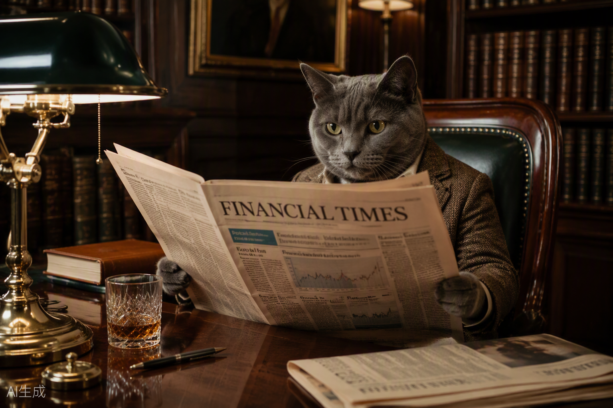

Lex: The market has spoken, and what it said was 'CAT'
The Lex column breaks with tradition to analyse Cnews with "appropriate gravity"
Friday 27 February 2026
All the news that's fit to purr — since 2024
CATS, CRYPTO & CAPITAL MARKETS
Editorial columns, Lex analysis, and reader letters

The Lex column breaks with tradition to analyse Cnews with "appropriate gravity"

Traditional finance vs. Big Tech vs. a cat emoji — and the cat is winning

Retired fund managers, economics professors, the Portuguese ambassador, and 12,000 cat emojis

The Financial Cat Times editorial board's comprehensive guide to understanding memecoins

When a bulge bracket bank uses the word "chonkiness" in a research abstract, something has changed